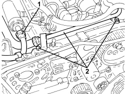
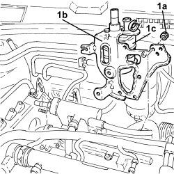
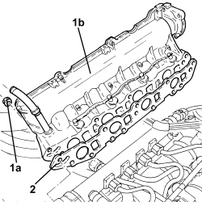
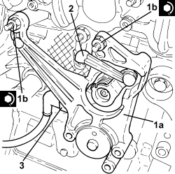
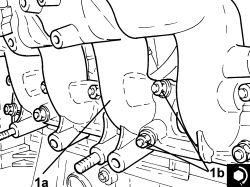
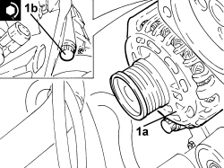

1072B10 INLET MANIFOLD - R + R AND REPLACE SEAL
- Path
- Procedures > 10 ENGINE > 1072 INLET AND EXHAUST MANIFOLDS > 1072B INLET MANIFOLDS > 1072B10 INLET MANIFOLD - R + R AND REPLACE SEAL
- Kind
- repair procedure (removal / refitting; the operation number is the code)
- Applies to
- engines: 1.9 JTD 8v, 1.9 JTD 16v, 2.4 JTD 20v; all production periods
- Interactive page
- https://sloeber94.github.io/elrnDB-fCrm/en/#/194002181
Applies to: engines: 1.9 JTD 16v; all production periods
 Removing
Removing
 Refitting
Refitting- Position the vehicle on a lift.
Op. 1016A10 SOUND-PROOFING COVER - R.R
Op. 1060G50 THROTTLE BODY - R.R
Op. 1080C24 E.G.R. SYSTEM SOLENOID - R + R
Op. 1048A50 TURBOCHARGER AIR INTAKE PIPE - R.R.
Op. 1084A16 OIL DIPSTICK PIPE - R.R
Op. 4450B04 RIGHT FRONT WHEEL - R.R
Op. 7055B66 ENGINE COMPARTMENT DUST COVER IN RIGHT FRONT WHEEL ARCH - R.R.
Op. 7055B91 RIGHT FRONT WHEEL ARCH LINER - R.R.
Op. 4410D16 BRACKET (ONE) RETAINING CHASSIS TO BODY - R R
Op. 1092G10 SINGLE ENGINE BELT - R.R
Op. 1092A10 CRANKSHAFT PULLEY - R + R
Op. 1032B10 TOOTHED TIMING BELT - R + R FOR TIMING ADJUSTMENT OR REPLACEMENT
Op. 1060E30 PRESSURE PUMP DRIVE PULLEY - R.R.
Op. 1060E10 DIESEL INJECTION PRESSURE PUMP - R.R.
1. Disconnect the vacuum pipes from the vacuum reservoir.
2. Undo the nuts (2a) and remove the vacuum reservoir (2b).
3. Loosen the bands and disconnect the engine oil vapour recovery pipes, engine oil vapour separator side.
4. Loosen the band and disconnect the condensed engine oil recovery pipe, engine oil vapour separator side.

Applies to: engines: 1.9 JTD 16v; all production periods
1. Disconnect the rapid connector for the fuel return pipe to the tank, fuel return manifold side.
2. Undo the bolts fixing the rigid section of the engine oil vapour recovery pipe and move it aside.

Applies to: engines: 1.9 JTD 16v; all production periods
1. Undo the fastenings (1a) and remove the bracket (1b) complete with engine oil vapour separator (1c).

Applies to: engines: 1.9 JTD 16v; all production periods
1. Loosen the bands and disconnect the fuel return pipes, fuel return manifold side.
2. Undo the bolts (2a) and remove the fuel return manifold (2b).

Applies to: engines: 1.9 JTD 16v; all production periods
1. Loosen the bands, undo the bolts (1a) and move the coolant return pipe to the engine coolant reservoir (1b).
2. Disconnect the electrical connection for the pressure relief sensor.
Description | Connector | |
|---|---|---|
2 | Supercharging sensor | See K082 SUPERCHARGING SENSOR |
3. Disconnect the electrical connections from the heater plugs and move the electrical wiring sideways.
Description | Connector | |
|---|---|---|
3 | Heater plugs |

Applies to: engines: 1.9 JTD 16v; all production periods
1. Disconnect the electrical connection from the throttle control shaft valve for the intake manifolds.
Description | Connector | |
|---|---|---|
1 | Flow modifier solenoid valve |

Applies to: engines: 1.9 JTD 16v; all production periods
1. Remove the stud shown in the diagram securing the pressure pump to the pressure pump mounting.

Applies to: engines: 1.9 JTD 16v; all production periods
1. Undo the nuts (1a) and remove the intake manifold (1b).
2. Remove the intake manifold gasket.

Applies to: engines: 1.9 JTD 16v; all production periods
Refitting
Removing1. Place a new intake manifold gasket in position.
2. Place the intake manifold (2a) in its housing and secure it by tightening the nuts (2b) to the recommended torque.
Component | Fastening | dia | Value (daNm) | Validity |
|---|---|---|---|---|
Intake manifold | Nut | M8 | (cylinder head side) 2.3 - 2.8 | 1.9 JTD 16v |

Applies to: engines: 1.9 JTD 16v; all production periods
- Place the stud securing the pressure pump to the pressure pump mounting in position.
1. Place the throttle control shaft for the intake manifolds (1a) in its housing and secure it by tightening the nuts (1b) to the recommended torque.
Component | Fastening | dia | Value (daNm) | Validity |
|---|---|---|---|---|
Throttle carrier shaft control valve for inlet ducts | Nut | M6 | 0.65 ÷ 0.75 | 1.9 JTD 16v 2.4 JTD 20v |
2. Connect the throttle control shaft valve linkage for the intake manifolds.
3. Connect the electrical connection to the throttle control shaft valve for the intake manifolds.

Applies to: engines: 1.9 JTD 16v; all production periods
- Refit the electrical wiring and connect the electrical connections to the heater plugs.
- Connect the electrical connection for the pressure relief sensor.
- Place the coolant return pipe to the engine coolant reservoir in position and tighten the bolts and the bands.
- Place the fuel return manifold pipe in its housing and secure it using the bolts.
- Connect the fuel return pipes, fuel return manifold side and tighten the bands.
- Place the bracket complete with engine oil vapour separator in its housing and secure it.
- Place the rigid section of the engine oil vapour recovery pipe in position and fasten it using the bolts.
- Connect the rapid connector for the fuel return pipe to the tank, fuel return manifold side.
- Connect the condensed oil recovery pipe, engine oil vapour separator side, and tighten the band.
- Connect the engine oil vapour recovery pipes, engine oil vapour separator side and tighten the bands.
- Place the vacuum reservoir back in its housing and secure it using the nuts.
- Connect the vacuum pipes to the vacuum reservoir.
Op. 1060E10 DIESEL INJECTION PRESSURE PUMP - R.R.
Op. 1060E30 PRESSURE PUMP DRIVE PULLEY - R.R.
Op. 1032B10 TOOTHED TIMING BELT - R + R FOR TIMING ADJUSTMENT OR REPLACEMENT
Op. 1092A10 CRANKSHAFT PULLEY - R + R
Op. 1092G10 SINGLE ENGINE BELT - R.R
Op. 4410D16 BRACKET (ONE) RETAINING CHASSIS TO BODY - R R
Op. 7055B91 RIGHT FRONT WHEEL ARCH LINER - R.R.
Op. 7055B66 ENGINE COMPARTMENT DUST COVER IN RIGHT FRONT WHEEL ARCH - R.R.
Op. 4450B04 RIGHT FRONT WHEEL - R.R
Op. 1084A16 OIL DIPSTICK PIPE - R.R
Op. 1048A50 TURBOCHARGER AIR INTAKE PIPE - R.R.
Op. 1080C24 E.G.R. SYSTEM SOLENOID - R + R
Op. 1060G50 THROTTLE BODY - R.R
Op. 1016A10 SOUND-PROOFING COVER - R.R
- Remove the vehicle from the lift.
Applies to: engines: 1.9 JTD 8v; all production periods
Removing
Refitting- Position the vehicle on a lift.
- Make sure that the ignition key is in the OFF position, then disconnect the battery terminal (-).
Op. 4450B04 RIGHT FRONT WHEEL - R.R
Op. 7055B66 ENGINE COMPARTMENT DUST COVER IN RIGHT FRONT WHEEL ARCH - R.R.
Op. 7055B91 RIGHT FRONT WHEEL ARCH LINER - R.R.
Op. 1092G10 SINGLE ENGINE BELT - R.R
Op. 1092A10 CRANKSHAFT PULLEY - R + R
Op. 1016A10 SOUND-PROOFING COVER - R.R
Op. 1048A10 AIR FILTER ASSEMBLY - R.R.
Op. 7055B54 UNDER ENGINE PROTECTION/GUARD - R.R.
Op. 1008B10 POWER UNIT FRONT SUPPORT FLEXIBLE MOUNTING (TIMING SIDE) - REPLACE
Op. 1032D12 TIMING SYSTEM PROTECTIVE COVER(S) - R + R
Op. 1092G20 ENGINE COMPONENT SINGLE BELT FIXED TENSIONER - ONE - R + R
Op. 1008A46 POWER UNIT RIGID SUPPORT - TIMING SIDE - R.R.
Op. 1032B10 TOOTHED TIMING BELT - R + R FOR TIMING ADJUSTMENT OR REPLACEMENT
Op. 5530B52 BATTERY SUPPORT/DRIP TRAY - R.R
Op. 1048B27 RIGID PIPE FOR AIR INLET TO THROTTLE BODY - R R
Op. 1060G50 THROTTLE BODY - R.R
Op. 1080C24 E.G.R. SYSTEM SOLENOID - R + R
Op. 1060F36 PIPES (ALL) FROM FUEL MANIFOLD TO INJECTOR - R.R.
Op. 1060F20 PIPE FROM PRESSURE PUMP TO FUEL MANIFOLD - R.R.
Op. 1060F30 SINGLE FUEL MANIFOLD PIPE - R.R.
Op. 1080C80 EXHAUST GAS/WATER HEAT EXCHANGER FOR EGR SYSTEM - R.R
Op. 1060F50 FUEL RETURN MANIFOLD - R.R.
Op. 1080D34 ENGINE OIL VAPOUR SEPARATOR - R + R
- Disconnect the electrical connections from the heater plugs and move the electrical wiring sideways.
Description | Connector | |
|---|---|---|
- | Heater plugs |
- Disconnect the electrical connection for the pressure relief sensor.
Description | Connector | |
|---|---|---|
- | Supercharging sensor | See K082 SUPERCHARGING SENSOR |
- Disconnect the electrical connection from the fuel pressure regulator on the pressure pump.
Description | Connector | |
|---|---|---|
- | Fuel pressure regulator |
- Disconnect the fuel supply pipe rapid connector, pressure pump side.
1. Undo the bolts (1a) and move the alternator (1b) aside.

Applies to: engines: 1.9 JTD 8v; all production periods
1. Undo the bolts (1a), (1b) and remove the pressure pump mounting (1c) complete with the pressure pump (1d).

Applies to: engines: 1.9 JTD 8v; all production periods
1. Undo the nuts (1a) and remove the intake manifold (1b).
- Remove the gasket.

Applies to: engines: 1.9 JTD 8v; all production periods
Refitting
Removing- Place the gasket back in its housing.
1. Place the intake manifold (1a) in its housing and secure it by tightening the nuts (1b) to the recommended torque.
Component | Fastening | dia | Value (daNm) | Validity |
|---|---|---|---|---|
Intake manifold | Nut | M8 | (cylinder head side) 2.3 - 2.8 | 1.9 JTD 8v |

Applies to: engines: 1.9 JTD 8v; all production periods
1. Fit the pressure pump mounting (1a) complete with pressure pump (1b) back in its housing and secure it tightening the bolts (1c) and (1d) to the recommended torque.
Component | Fastening | dia | Value (daNm) | Validity |
|---|---|---|---|---|
Pressure pump mounting | Bolt (pretreated to be replaced) | M8 | (engine crankcase side) 2.3 - 2.8 | 1.9 JTD 8v |
Component | Fastening | dia | Value (daNm) | Validity |
|---|---|---|---|---|
Pressure pump mounting | Bolt | M10 | (cylinder head side) 4.5 - 5.5 | 1.9 JTD 8v |

Applies to: engines: 1.9 JTD 8v; all production periods
1. Place the alternator (1a) in its housing and fasten it tightening the bolts (1b) to the recommended torque.
Component | Fastening | dia | Value (daNm) | Validity |
|---|---|---|---|---|
ALTERNATOR TO BRACKET | Bolt | M12 | 6,3 ÷ 7,6 | 1.9 jtd 16v 1.9 jtd 8v 2.4 jtd 20v |
Component | Fastening | dia | Value (daNm) | Validity |
|---|---|---|---|---|
ALTERNATOR TO IE PUMP MOUNTING | Bolt | M12 | 6,3 ÷ 7,6 | 1.9 jtd 16v 1.9 jtd 8v |

Applies to: engines: 1.9 JTD 8v; all production periods
- Connect the fuel supply pipe rapid connector, pressure pump side.
- Connect the electrical connection to the fuel pressure regulator on the pressure pump.
- Connect the electrical connection for the pressure relief sensor.
- Refit the electrical wiring and connect the electrical connections to the heater plugs.
Op. 1080D34 ENGINE OIL VAPOUR SEPARATOR - R + R
Op. 1060F50 FUEL RETURN MANIFOLD - R.R.
Op. 1080C80 EXHAUST GAS/WATER HEAT EXCHANGER FOR EGR SYSTEM - R.R
Op. 1060F30 SINGLE FUEL MANIFOLD PIPE - R.R.
Op. 1060F20 PIPE FROM PRESSURE PUMP TO FUEL MANIFOLD - R.R.
Op. 1060F36 PIPES (ALL) FROM FUEL MANIFOLD TO INJECTOR - R.R.
Op. 1080C24 E.G.R. SYSTEM SOLENOID - R + R
Op. 1060G50 THROTTLE BODY - R.R
Op. 1048B27 RIGID PIPE FOR AIR INLET TO THROTTLE BODY - R R
Op. 5530B52 BATTERY SUPPORT/DRIP TRAY - R.R
Op. 1032B10 TOOTHED TIMING BELT - R + R FOR TIMING ADJUSTMENT OR REPLACEMENT
Op. 1008A46 POWER UNIT RIGID SUPPORT - TIMING SIDE - R.R.
Op. 1092G20 ENGINE COMPONENT SINGLE BELT FIXED TENSIONER - ONE - R + R
Op. 1032D12 TIMING SYSTEM PROTECTIVE COVER(S) - R + R
Op. 1008B10 POWER UNIT FRONT SUPPORT FLEXIBLE MOUNTING (TIMING SIDE) - REPLACE
Op. 1048A10 AIR FILTER ASSEMBLY - R.R.
Op. 1092A10 CRANKSHAFT PULLEY - R + R
Op. 1092G10 SINGLE ENGINE BELT - R.R
Op. 7055B91 RIGHT FRONT WHEEL ARCH LINER - R.R.
Op. 7055B66 ENGINE COMPARTMENT DUST COVER IN RIGHT FRONT WHEEL ARCH - R.R.
Op. 4450B04 RIGHT FRONT WHEEL - R.R
Op. 0010T20 ENGINE COOLANT - CHANGE
Op. 7055B54 UNDER ENGINE PROTECTION/GUARD - R.R.
Op. 1016A10 SOUND-PROOFING COVER - R.R
- Connect the negative battery terminal.
- Remove the vehicle from the lift.
Applies to: engines: 2.4 JTD 20v; all production periods
- On this version it is not possible to remove/refit the intake manifold on the car.
To perform this operation, remove/refit the power unit
Op. 1004B14 POWER UNIT WITH AUTOMATIC TRANSMISSION R + R
and then work at the bench, customising the engine service procedures for this operation.
Topics linked from this page (34)
- 0010T20 ENGINE COOLANT - CHANGE
- 1004B14 POWER UNIT WITH AUTOMATIC TRANSMISSION R + R
- 1008A46 POWER UNIT RIGID SUPPORT - TIMING SIDE - R.R.
- 1008B10 POWER UNIT FRONT SUPPORT FLEXIBLE MOUNTING (TIMING SIDE) - REPLACE
- 1016A10 SOUND-PROOFING COVER - R.R
- 1032B10 TOOTHED TIMING BELT - R + R FOR TIMING ADJUSTMENT OR REPLACEMENT
- 1032D12 TIMING SYSTEM PROTECTIVE COVER(S) - R + R
- 1048A10 AIR FILTER ASSEMBLY - R.R.
- 1048A50 TURBOCHARGER AIR INTAKE PIPE - R.R.
- 1048B27 RIGID PIPE FOR AIR INLET TO THROTTLE BODY - R R
- 1060E10 DIESEL INJECTION PRESSURE PUMP - R.R.
- 1060E30 PRESSURE PUMP DRIVE PULLEY - R.R.
- 1060F20 PIPE FROM PRESSURE PUMP TO FUEL MANIFOLD - R.R.
- 1060F30 SINGLE FUEL MANIFOLD PIPE - R.R.
- 1060F36 PIPES (ALL) FROM FUEL MANIFOLD TO INJECTOR - R.R.
- 1060F50 FUEL RETURN MANIFOLD - R.R.
- 1060G50 THROTTLE BODY - R.R
- 1080C24 E.G.R. SYSTEM SOLENOID - R + R
- 1080C80 EXHAUST GAS/WATER HEAT EXCHANGER FOR EGR SYSTEM - R.R
- 1080D34 ENGINE OIL VAPOUR SEPARATOR - R + R
- 1084A16 OIL DIPSTICK PIPE - R.R
- 1092A10 CRANKSHAFT PULLEY - R + R
- 1092G10 SINGLE ENGINE BELT - R.R
- 1092G20 ENGINE COMPONENT SINGLE BELT FIXED TENSIONER - ONE - R + R
- 4410D16 BRACKET (ONE) RETAINING CHASSIS TO BODY - R R
- 4450B04 RIGHT FRONT WHEEL - R.R
- 5530B10 BATTERY - R+R
- 5530B52 BATTERY SUPPORT/DRIP TRAY - R.R
- 7055B54 UNDER ENGINE PROTECTION/GUARD - R.R.
- 7055B66 ENGINE COMPARTMENT DUST COVER IN RIGHT FRONT WHEEL ARCH - R.R.
- 7055B91 RIGHT FRONT WHEEL ARCH LINER - R.R.
- A040 HEATER PLUGS
- L064 FLOW MODIFYING SOLENOID VALVE
- N077 FUEL PRESSURE REGULATOR